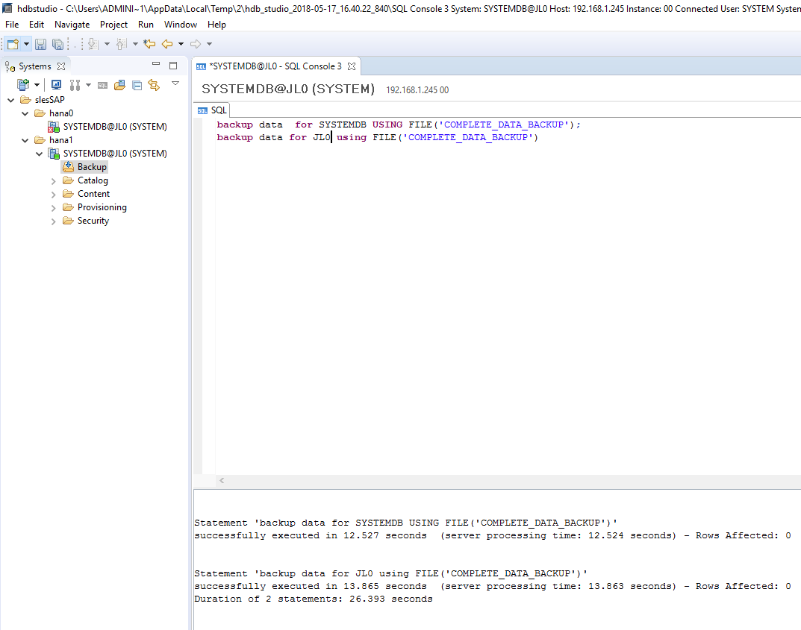

The following sections detail how to configure SAP HANA System Replication.
To do a backup on SAP HANA, you can either use SAP HANA studio or hdbsql as the client command tool.
The backup command is
For HANA 1 single container mode:
BACKUP DATA USING FILE('COMPLETE_DATA_BACKUP');For HANA 2 with multitenant as default mode (You should back up systemDB and all tenantDB as shown below in the example):
BACKUP DATA for <DATABASE> using FILE('COMPLETE_DATA_BACKUP')Command line example:
BACKUP DATA for SYSTEMDB using FILE('COMPLETE_DATA_BACKUP')BACKUP DATA for JL0 using FILE('COMPLETE_DATA_BACKUP')In this example for HDB Studio, the SAP HANA database backup is executed on both ECS instances as shown below:
|  |
Log on to the primary node with: su - <sid>adm.
[sidadm] should be replaced by your SAP HANA database SID. In our example it is su - jl0adm;
Stop HANA with: HDB stop.
Change the following file content:
vi /hana/shared/<SID>/global/hdb/custom/config/global.ini
Add the following content:
[system_replication_hostname_resolution] <IP> = <HOSTNAME>
[IP] should be the address of the ENI (heartbeat IP address for SAP HANA system replication) attached to the Secondary node;
[HOSTNAME] should be the hostname of the Secondary node;
In the example at hand, the configuration is as follows:
[system_replication_hostname_resolution] 192.168.1.246 = hana1
Perform the same steps as outlined above for the Primary node on the Secondary node. However, do not forget to use here the IP and hostname of the Primary node instead of the Secondary node.
In the example at hand, the configuration is as follows:
[system_replication_hostname_resolution] 192.168.0.83 = hana0
Log on to the primary node with: su - <sid>adm;
Start HANA with: HDB start;
Enable System Replication with:
hdbnsutil -sr_enable --name= [primary location name]
[primary location name] should be replaced by the location of your primary SAP HANA node.
For the example at hand, the following command is used:
hdbnsutil -sr_enable --name=hana0
Note
All of the above operations are done on the Primary node.
Log on to the secondary node with: su - <sid>adm;
Stop SAP HANA with: HDB stop;
Register the Secondary SAP HANA node to the Primary SAP HANA node by running the following command:
hdbnsutil -sr_register --remoteHost=[location of primary Node] --remoteInstance=[instance number of primary node] --replicationMode=sync --name=[location of the secondary node] --operationMode=logreplay
For the example at hand, the following command is used:
hdbnsutil -sr_register --name=hana1 --remoteHost=hana0 --remoteInstance=00 --replicationMode=sync --operationMode=logreplay
Start SAP HANA with: HDB start;
Verify the System Replication Status with the following command:
hdbnsutil -sr_state
In the example at hand, the following status is displayed on the secondary SAP HANA node hana1:
 |
Note
All of the above operations are done on the Secondary node.